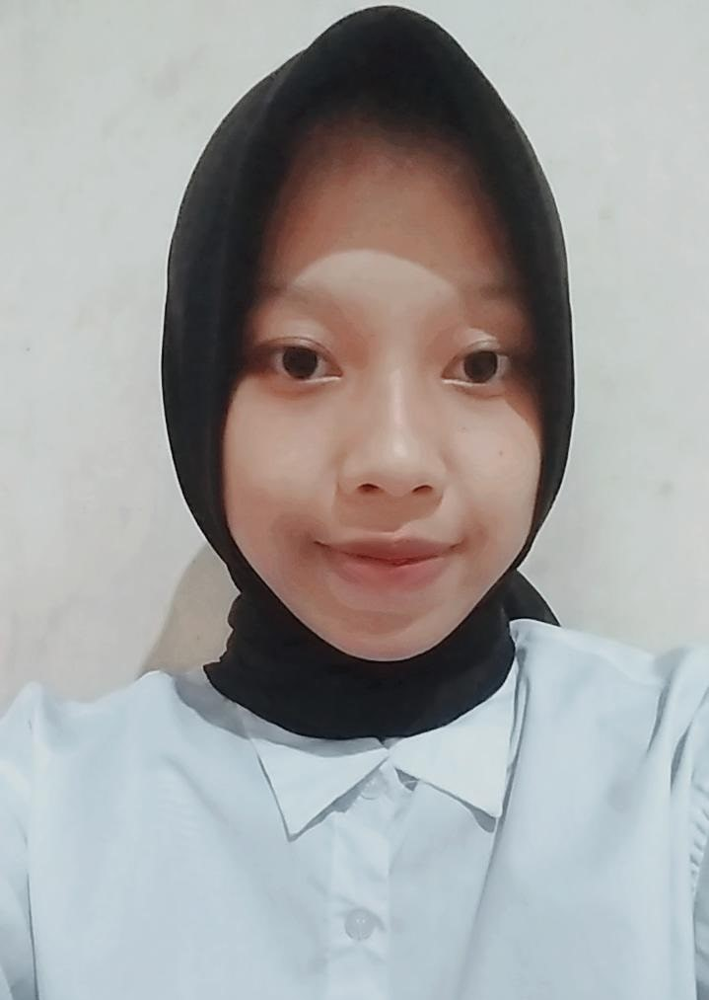

Profile Sholikah Desi Purwanti
Profile Sholikah Desi Purwanti
Welcome to my first website!

Halo semuanya, perkenalkan namaku Sholikah Desi Purwanti dan aku biasa dipanggil Desi. Aku lahir pada H-1 Hari Raya Tahun Baru 2002, tepatnya pada tanggal 31 Desember 2001. Aku berasal dari salah satu Kabupaten yang berada di Jawa Timur, tepatnya di Kabupaten Madiun. Madiun terkenal dengan beberapa makanan khas nya, yaitu pecel, bluder cokro dan juga brem. Selain itu, Madiun juga terkenal sebagai tempat produsen kereta api terintegrasi pertama di Asia Tenggara. Belum beranjak dari makanan, aku mempunyai beberapa makanan favorit, seperti bakso, olahan dari mie, seblak dan juga nasi goreng. Namun sebenarnya semua makanan sudah menjadi favorit dalam hidup ku 😀. Next, jika terkait dengan hobi, salah satu kegiatan yang sangat menjadi kegemaranku adalah rebahan dengan menonton sebuah film. Selain itu, voli juga merupakan hobi yang sudah lama, namun jarang untuk dilakukan.
Tahun 2021, saat ini aku merupakan mahasiswa di salah satu Perguruan Tinggi Negeri terbaik di Indonesia, yaitu Institut Teknologi Sepuluh Nopember pada jurusan Sistem Informasi tahun 2020. Sebuah kebanggan tersendiri dapat menjadi bagian dari salah satu Institut terbaik di Indonesia. Saat ini aku telah menjadi mahasiswa tahun kedua, semester 3. Sudah satu tahun pembelajaran online terlewatkan. Begitu banyak rintangan dan kendala untuk dapat bertahan hingga pada semester 3 ini. Pada semester sebelumnya, aku mencoba mengikuti beberapa pelatihan, yang diantaranya adalah sebagai berikut:
- Latihan Keterampilan Mahasiswa Wirausaha Tingkat Dasar (LKMW-TD),
- Pelatihan Karya Tulis Ilmiah Tingkat Dasar (PKTI-TD),
dan satu pelatihan yang masih dalam proses pelaksanaan, yaitu:
- Latihan Keterampilan Manajemen Mahasiswa Pra Tingkat Dasar (LKMM Pra TD)
Adapun kepanitiaan yang pernah aku ikuti antara lain:
- - INI LHO ITS! 2021 Forda Madiun sebagai staff kestari,
- - GERIGI ITS 2021 sebagai staff kestari, dan
- - OKKBK HMSI 2021 sebagai Komisi Disiplin.
Beberapa pelatihan dan juga kepanitiaan yang aku ikuti ini selain untuk menambah pengalaman yang baru, juga bertujuan untuk melatih kerja sama dengan anggota tim serta dapat menambah insight baru pada kegiatan non-akademik selama menempuh kuliah.
Dengan begitu padatnya kegiatan perkuliahan, aku harus bisa memanajemen diri aku sendiri, antara lain dengan mengatur waktu dan prioritas untuk kegiatan akademik, non-akademik serta waktu untuk bermain atau pun bersantai. Menurutku, pembagian waktu untuk bermain dan bersantai juga cukup penting di tengah padatnya kegiatan perkuliahan. Hal ini agar tetap menjaga kesehatan lahir serta batin mahasiswa. Adapun games yang sering aku mainkan ketika bersantai adalah Kuku Kube. Games ini dimainkan dengan cara memilih satu warna yang berbeda diantara warna yang akan ditampilkan. Jika berminat, silahkan kunjungi games nya pada tautan ini!.
Aku rasa cukup sekian perkenalan diri dari aku. Sampai jumpa di lain kesempatan!
Happy Playing Games and Stay Safe!